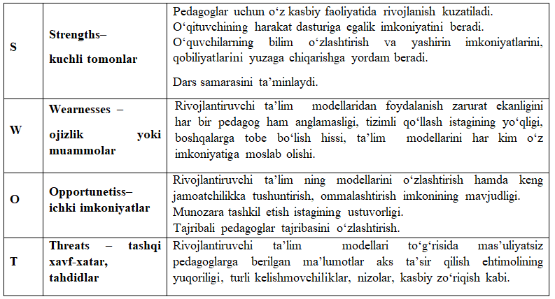
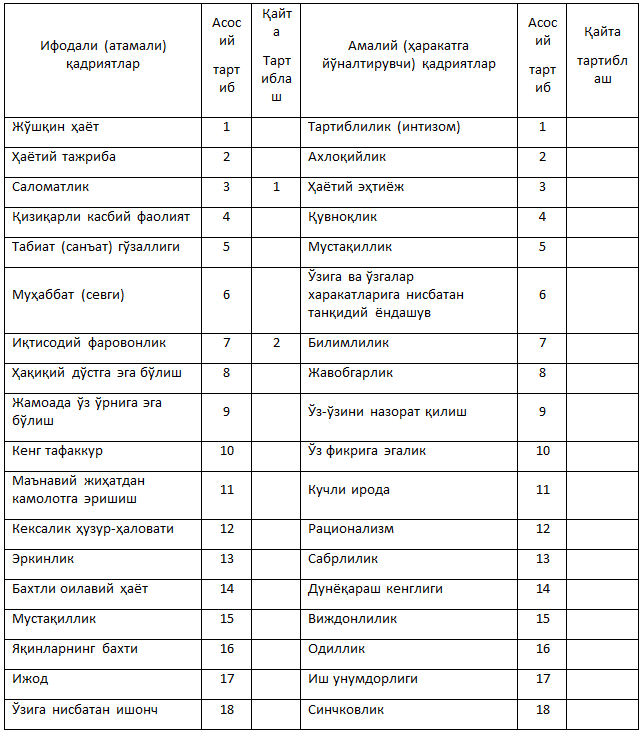

Pedagogning o‘z-o‘zini rivojlantirish mexanizmlari.
Reja:
Kasbiy rivojlanish modellari
Rivojlantiruvchi mashqlar
Rivojlantiruvchi variativ ta’limga tayyor bo‘lishning psixologik aspekti.
Baqirishning foydasi bormi?
Maʼlumki, eng yoqimsiz muloqot usullaridan biri bu – baqirish. Agar inson baqirsa, demak, atrofdagilar uni eshitmayotgan boʻladi va u ovozini koʻtarishga majbur boʻladi. Bolalar yoki oʻsmirlarga baqirib, siz ularga goʻyoki xabar qilayotgandek boʻlasiz: “Sen meni eshitmayapsan!”.
♻ Natijada, bola haqiqatdan ham sizni eshitmay qoʻyadi. Siz baqirishga oʻtganingizda bola shunchaki sezgi aʼzosini oʻchirib qoʻyadi va hech narsani eshitishni xohlamaydi. Buyruq berayotganingizda baqirishingiz shunchaki baqirishdan ham yomonroq. Bundan kelib chiqadiki, bola siz unga nima deyayotganingizni eshitmayapti. Bolaga baqirishingiz undagi boshqarilish istagini chegaralab qoʻyadi.
Baqirish – boshqarishning eng samarasiz vositasi boʻlib, u sizning boshqaruvchilik oʻrningizni zaiflashtiradi. Faqatgina siz ayni buyruqni qatʼiyat bilan bolaga qayta va qayta takrorlayversangiz, u qaysarlik qilishni toʻxtatib, rahbariga ergashadi. Inson baqirishni boshladimi, demak u buyruq berishni bas qilgan va talab qilishga oʻtgan boʻladi. Baqirish ostida tahdid boʻladi: “Yaxshisi gapimga quloq sol, aks holda!”
Marhamat rivojlantiruvchi modellarni o‘rganing va tadbiq eting!
Fransiyada pedagog kadrlarini rivojlantirish tizimi pedagogik fikrlashni rag‘batlantiruvchi va ijodiy faollikni rivojlantiruvchi shaxsga yo‘naltirilgan texnologiyalar tizimidan foydalanish, nomzodlarni testdan o‘tkazish, har bir nomzodning shaxsiy varaqasini tahlil qilib chiqish va ular bilan suhbatlashish orqali kadrlarni tanlash, ta’lim yo‘nalishini nafaqat mutaxassisligiga qarab, balki tanlangan o‘quv muassasasining jihatlarini hisobga olgan holda, tayyorlovning maksimal bo‘lishini ta’minlashga qaratilgan holda tanlash bilan tavsiflanadi. Shu bilan birga, kasbiy malakani oshirishda ta’lim mazmunining psixologik, pedagogik hamda ijtimoiy yo‘naltirilganligi, trening mashg‘ulotlariga asoslanib, bo‘lg‘usi rahbarlarni muloqatga amaliy jihatdan tayyorlash, amaliyotlarni qayta shakllantirish, shuningdek innovatsion ta’lim shakllaridan foydalanish yo‘lga qo‘yilgan..
Germaniyada kadrlarni rivojlantiruvchi ta’lim jarayoniga tayyorlashning o‘ziga xos bir shakli sifatida treninglar tashkil etila boshladi. Treninglar tarkibiga individual ishlash, qo‘yilgan muammoni hal qilishda hamkasabalar bilan birgalikda ishlash, ishbilarmonlik o‘yinlari, uslubiy ko‘rsatmalar yaratish kabi faoliyat turlari kiritildi. Malaka oshirish tizimini rivojlantirish sohasida davlat tomonidan mablag‘ ajratiladigan tadqiqotlar ham amalga oshirila boshladi. Ta’lim sifatiga hamda ta’lim muassasasi kadrlarining kasbiy malakasiga bo‘lgan talab tobora ortib borayotgan bugungi kunda ularning rivojlantirish uzluksiz ta’limning asosiy tarkibiy qismi bo‘lib qolmoqda. Pedagog kadrlarni rivojlantiruvchi ta’lim muhitiga tayyorlash tizimini rivojlantirishning o‘ziga xos jihatlari ularning shaxsiy sifatlari, qobiliyatlarini va kasbiy tayyorgarlik darajasini hisobga olish, maslahatlar berish, tashxislash va kasbiy kelishmovchiliklarni hal qilish, rivojlanish va o‘z-o‘zini rivojlantirishni qo‘llab-quvvatlash, masofaviy malaka oshirish shaklidan foydalanish bilan tavsiflanadi.
Angliyada. Davlatning an’anaviy modeliga ko‘ra, dunyoning juda ko‘p yetakchi universitetlari pedagoglar uchun o‘zlarining maxsus trening darsturlarini ishlab chiqishadi hamda muntazam ravishda barcha bo‘g‘in pedagog kadrlarining ivojlantirib borishni amalga oshiradilar. Dasturlar asosan, modulli tavsifga ega bo‘lib, pedagoglar uchun ayrim yo‘nalishlari bo‘yicha yiliga bir necha marta o‘tkaziladi, o‘qitish qisqa muddatga, xususan 1-3 kunga mo‘ljallangan, yoki uzoqroq muddatda kurs tinlovchilarining mustaqil ta’lim olishlariga yo‘naltirilgan va axborot-kommunikatsiya texnologiyalarini keng tatbiq etishga asoslangan.
AQShda pedagog kadrlar kasbiy rivojlantirish tizimida supervayzerlik, kasbni shakllantirishga yo‘naltirilgan treninglar, modulli texnologiyalar, kasbiy hamkorlik texnologiyalari kabi shaxsga yo‘naltirilgan kasbiy ta’lim texnologiyalaridan samarali foydalaniladi. Kadrlar kasbiy malakasini oshirish jarayonida mazkur texnologiyalarni qo‘llash ma’lum kasbiy bilimlarni shakllantirishga asoslanadi. Mashg‘ulotlarni istalgan bosqichida to‘xtashish yoki yana qaytadan tiklash mumkin bo‘ladi. Pedagog kadrlar rivojlanishi bo‘yicha barcha mashg‘ulotlar video va audio vositalariga yozib boriladi.
Treninglar
“Шу ерда ва ҳозир” (тренинг қатнашчиларининг ҳис- туйғулари, кечинмалари ва муносабатларини тренинг доирасида кўриб чиқиш ва уларни келажак ёки ўтмиш билан боғламаслик керак); регламент қоидаси (тренинг иштирокчилари ўз фикрларини аниқ, лўнда, қисқа баён этишлари керак); сирлилик қоидаси (машғулот жараёнидаги барча кечинмалар гуруҳдан ташқаридаги чиқиши мумкин эмас); Тренинг ўтказишнинг ўзига хос хусусияти: мулоқот жараёнида юзага келиши мумкин бўлган муаммоларни бартараф этиш, шахсда мулоқот маъданияти шакллантириш, мулоқот техникасини янада ривожлантириш. Стратегиялар: ақлий ҳужум, ролли вазият, карточка. Иштирокчилар: педагог-ходимлар. Вақт: 20 минут. Машғулотнинг бориши: Кириш қисми. Саломлашиш: Ассалом алайкум тренинг иштирокчилари. Бугунги тренинг машғулотига хуш келибсиз!!! Бугунги тренинг машғулотларини ҳамкорликда ташкил этиб, ўзаро ҳамжиҳатликда олиб борамиз деган умиддаман! Мақсад: (олдиндан тайёрланган, ватманга). Вазифалар: (олдиндан тайёрланган, ватманга). Қоидалар: (олдиндан тайёрланган, ватманга). Танишув: “Сирли саломлашиш” (15 дақиқа) Кўрсатма: сиз ҳеч кимга қарамасдан саломлашишни амалга оширинг. Гуруҳдагилар салом кимга йўналганлигини топиши лозим. Сиз менинг огоҳлантиришимдан сўнг баланд овоз билан кимга сирли саломлашиш йўллганингизни айтасиз. Сизнинг саломлашишингиз образли, ёрқин аммо сирли бўлсин. Машқдан сўнг тренинг иштирокчилари учта энг яхши саломни аниқлайдилар. “Тилак билдириш” 5 дақиқа. Тренинг иштирокчилари айлана бўлиб ўтирадилар. Танишишни амалга оширишда у олдин исмини айтиб, сўнгра қўлини ушлаган ҳолатда ширин тилак билдирилади. Асосий қисм. Машғулот 1. “Гуруҳ эртаги” 17 дақиқа. Мақсади: гуруҳда ўзаро ҳамкорликни ошириш. Кўрсатма: сизга карточка берилади. Бу карточкада фақат ўзингиздан олдинги шеригингизни фикрини ўқиб эртакни давом эттирасиз. Тренинг иштирокчиларига карточка тарқатилади. Тренинг иштирокчилари фақат ўзларидан олдинги фикрини ўқиб, “Гуруҳ эртаги”ни давом эттиради. Охирги фикридан сўнг “Гуруҳ эртаги” тренер томонидан ўқиб эшиттирилади.
Rivojlantiruvchi ta’lim modellari
O'quvchilaringizni har tomonlama rivojlantirish uchun
O‘quvchining bilimga qiziqishini o‘ylab, misol uchun, qiziquvchanlik, taajjublanish, shubhalanish, sergak turish, ajablantirish orqali ularga yordam bering.
➖ Shunday maqsadlar va topshiriqlar beringki, ular o‘quvchi uchun arzigulik va qiziqarli bo‘lib tuyulsin!
➖ O‘quvchini, kerak bo‘lsa, majburlashga ham tortinmang. Masalan, muhlat berib, sifat va miqdor talabini qo‘ying. Talab qilish orqali rag‘batlantiring.
O‘quvchining aynan ilk qadamlariga dalda bering.
➖ O‘quvchining harakatlanishiga to‘sqinlik qilmang va o‘ta og‘ir
o‘qitish bilan qiynamang!
➖ O‘quv maqsadlarini aniq ifodalab bering. O‘quvchilar o‘zi ham tekshira olishi mumkin bo‘lsin.
➖ O‘quvchi mustaqil o‘rganishiga imkon yarating. O‘quvchi keyinchalik ham mustaqil ishlay olsin.
➖ Xatolar va yanglishlardan saboq olishga sharoit yarating va yaxshi niyatda tanqid qiling.
➖ O‘quvchidan biror narsani noto‘g‘ri qilish qo‘rquvini olib, uni o‘rgangan narsalarini to‘g‘ri qo‘llay olishiga ishontiring!
➖ O‘zaro ishonch hissini vujudga keltiring, negaki qo‘rquvdan hech vaqo chiqmaydi.
Ana endi o‘zingizni rivojlantiring!!!!
Maqsad: Boshlang‘ich sinf o‘qituvchilarini zamonaviy o‘qitish modellari bilan tanishtirish, ularda tahlil qilish, baholash ko‘nikmasini rivojlantirish. Mashg‘ulot shakli: sinfdan tashqari, mustaqil faoliyat. Mashg‘ulot metodlari: innovatsion ta’lim metodlari - “Treninglar”, “Muammoli topshiriqlar”, “Ven diagrammasi”, “SWOT tahlil”. Mashg‘ulotning borishi: Pedagoglar o‘z faoliyatlarida ta’limning qanday zamonaviy modelidan foydalanishlarini bilish uchun quyidagi savollar taklif etiladi: Ta’lim nima? Rivojlantiruvchi ta’lim - chi? Rivojlantiruvchi ta’lim ning bir qator modellari mavjud. Siz qaysi birini tushuntira olasiz? Rivojlantiruvchi ta’lim haqida nimalarni bilasiz? Pedagoglar o‘z fikrlarini bildiradilar. Amaliyot shuni ko‘rsatadiki, ta’limda samaraga erishishda faqat yagona ta’lim usuliga e’tibor qaratish faoliyatning samaradorligini oshirmaydi. Zamonaviy sharoitda har bir elementni birlashtirish va ularda o‘z imkoniyatini yuzaga chiqarish maqsadga muvofiq. Bunda “Har bir o‘quvchi bilan qanday qilib ishlash kerak?” “Pedagoglarga rivojlantiruvchi ta’lim imkoniyatlarini eslatib turish kerakmi?”, “Rivojlantiruvchi ta’lim zarurati nimada?”, “Natija nimaga olib keladi?” kabi savollarga javob topiladi. Keyingi bosqichda muammoli topshiriq taklif etiladi. O‘quv jarayoni asosan bilim, ko‘nikma, ijodiy tajribani shakllantirishga qaratilganligini isbotlang, shuning uchun yetakchi funksiyani tashkil etadi. Agar yo‘q bo‘lsa, nima uchunligini tushuntiring. 2 ) O‘rganish, bilimlarni o‘zlashtirish jarayonida har tomonlama yo‘nalishda - nutq, fikrlash, hissiyot, shaxsning motorli sohalari, hissiy-ixtiyoriy va motivatsion-talab, shuning uchun o‘quv jarayonining rivojlanish funksiyasi yetakchi hisoblanadi. Agar yo‘q bo‘lsa, nima uchunligini tushuntiring. 3) O‘quv jarayonida axloqiy va estetik g‘oyalar, dunyoqarashlar tizimlari, jamiyatdagi xatti-harakatlar normalariga, shuningdek, shaxsning ehtiyojlariga, ijtimoiy xulq-atvorga rioya qilish qobiliyatini isbotlang. Bu jarayonda faoliyat, qadriyatlar va qadriyatga yo‘naltirilganlik, dunyoqarash rivojlanadi, chunki izchil ta’lim funksiyasi yetakchi hisoblanadi. Agar yo‘q bo‘lsa, nima uchunligini tushuntiring (muammo aniq dalillar asosida amalga oshadi). O‘qituvchilar bilan trening-mashq bosqichi. “Madaniyatni anglash qonuniyati” mashqi. Kerakli jihozlar: qog‘oz, qalam. Zamonaviy ta’lim shaxsga yo‘naltirilgan bo‘lib, har bir o‘quvchining imkoniyatini, qobiliyatini yuzaga chiqarishi talab etiladi. Buning uchun pedagog madaniyatni - yangilik, innovatsiyalarni qabul qilishi maqsadga muvofiq. Madaniyatni anglash qonuniyatiga muvofiq: “O‘z pedagogik faoliyatingizni qanday tahlil qilasiz? Boshqalarning faoliyatini-chi? O‘zingiz bilgan, o‘zlashtirgan yangilikni boshqalarga o‘rgatasiz - mi?. Bu qoidaga pedagoglar doimo ham amal qilmaydi. Ya’ni ba’zan pedagoglar ta’limning innovatsion usul, vositalarini qo‘llash imkoniyatiga ega bo‘lishi mumkin, ammo, boshqalarga o‘rgatishga emas yashirishga harakat qiladi. Lekin, o‘zi boshqalar nimanidir o‘rgatmasa undan xafa bo‘ladi. Muayyan vaziyatlarda pedagog o‘z harakatlarini qanday nazorat qilishi kerak? Pedagoglarga quyidagicha topshiriq beriladi: Varaqni ikki qismga bo‘ling. Birinchi qismiga shunday sarlavha qo‘ying: Bu qismga o‘zingizni faoliyatingizga ijobiy ta’sir etadigan imkoniyatlarni: tajriba almashish, innovatsion texnologiyalarni o‘rganish, xorijiy modellarni o‘zlashtirish kabi. Varaqning ikkinchi qismiga esa: qaysi imkoniyatlarini o‘rgatasiz, nima uchun? Masalan: sizga obru orttirishingizga foydali bo‘lgan tajribalarni, innovatsion modellarni xech bir to‘siqlarsiz o‘rgata olasizmi? “O‘zim uchun” istayman “Boshqalar uchun” istamayman Munozara: O‘zingiz uchun foydali modellarni shunchaki nomigagina o‘rgatasiz? Bu aniq. To‘g‘rimi? Boshqalarga o‘rgatsangiz sizdan ko‘ra rivojlanib ketishini istamaysiz, xolos. Shundaymi? Pedagoglar bilan olib borilgan munozaradan so‘ng, pedagoglik oliy maqom ekanligini, bunda faqat yutuqni o‘ylash to’g‘ri emasligini tushuntirish asosida “Rivojlantiruvchi ta’lim modellari” haqida tushuncha berildi. O‘zlashtirilgan bilimlar “Ven diagrammasi”, “Svot-tahlil” metodlari orqali mustahkamlandi.
Rivojlantiruvchi ta’lim modellaridan foydalanish nima beradi?

Pedagogning innovatsion faoliyati Ikki oʻtinchi
Ikki oʻtinchi musobaqalashadigan boʻlishibdi. Qalin oʻrmondan joy tanlab, olti soat ichida kim koʻp daraxt yiqitsa, oʻsha yengadigan boʻlibdi. ....Ertalab soat oltida ikkovi baravar ish boshlabdi. Oradan bir soatcha oʻtgach, ulardan birining boltasi taqillamay qolibdi. Narigisi «Sherigim charchab, dam olyapti shekilli» deb oʻylabdi-da, daraxt chopishda davom etibdi. Birozdan keyin yana sherigining bolta urgani eshitila boshlabdi... ....Biror soatdan keyin yana boyagi sherikning daraxt chopgani eshitilmay qolibdi. Oʻtinchi ichida xursand boʻlib, «Sherigim yana dam olyapti, endi menga yetib olishi qiyin» - deb, ishda davom etibdi. Shu tarzda sherigi yana 5-6 marta jimib qolibdi... ....Nihoyat, kun tikkaga kelganda musobaqani toʻxtatib, har biri oʻzi agʻdargan daraxtlarni sanab koʻrishibdi. Qarashsa, orada toʻxtab-toʻxtab ishlagan oʻtinchi koʻproq daraxt agʻdargan ekan. Sherigi hayron boʻlib, «Axir sen charchab, kamida besh-olti marta toʻxtab, dam olding. Bu paytda men ancha daraxt agʻdarib qoʻygan boʻlishim kerak edi... - Qanday qilib sen koʻproq daraxt agʻdarding?» -deb soʻrabdi. Shunda gʻolib boʻlgan oʻtinchi: - «Ogʻayni, men dam olish uchun emas, boltani charxlab olish uchun toʻxtagan edim», -deb javob beribdi... 📌 Metod va aql ham xuddi boltadek ish qurolidir, aziz ustozlar! Tinmay ishlayversa, charchab, oʻtmaslashib qoladi. Shuning uchun goh-gohida unga ham dam berib, charxlab turish kerak!
Siz qanday innovatsion usullardan foydalanasiz?
Ролли вазият:
Машғулот №2. “Сўзсиз алоқа” 8 дақиқа. Мақсад: шахсда новербал мулоқотни шакллантириш. Кўрсатма: тренинг иштирокчиларидан 5 киши гуруҳ ташқарисида туради. Менинг уйимда кучукчам бор, агар уйга тезроқ бормасам у оч қолади. Шунинг учун сен бориб кучукчамни овқатлантириб қўй. Тренер сифатида фақат мен сўз билан айтаман, тренинг иштирокчилари эса бу ҳикояни бир-бирларига мимика орқали тушунтиради.
Difersifikatsiya sharoitida ta’lim Oʻqituvchi savolni qanday berish kerak? _“Yetarlicha tushuntira olyapmanmi?”_
➖Siz mavzuni tushuntiryapsiz va oʻquvchilardan har zamonda “tushunyapsizlarmi” deb soʻrab turasiz. Ammo bu savolni berganingizda butun sinf sukut saqlaydi. Axir hech boʻlmaganda sinfdan 4-5 oʻquvchi tushunmay qolgan boʻlishi mumkin edi-ku? “Tushundingizmi” tarzida savol berishda bor masʼuliyat oʻquvchining zimmasiga yuklatiladi. Bu ularga "agar tushunmasangiz bu sizning aybingiz" - deb taʼkidlayotgandek tuyuladi.
📌 Biroq, agar siz “men yetarlicha tushuntira olyapmanmi?” deb soʻrasangiz, oʻquvchilar tushunmaganliklari uchun oʻzlarini aybdor his qilmaydilar va tushunmaganlarini soʻrashda erkin boʻladilar. Siz yangicha savol usullarini bilasizmi?
“Diversifikatsiya” atamasi quyidagi talqinlarga ega ( lot. diversificatio – o‘zgarish, xilma-xillik). Bunda quyidagi ma’nolar bilan ifodalanadi: 1. Turlilik, xilma-xillik. 2. Ixtisoslashgan firmalarning (sanoat, qurilish, transport) boshqa sanoat, xizmat ko‘rsatish va boshqalarga kirib borishi, diversifikatsiya natijasida ko‘p tarmoqli komplekslar vujudga keladi. 3. Ishlab chiqariladigan mahsulot turlari va ko‘rsatilayotgan xizmatlar turlarini kengaytirish. “Ensiklopedik lug‘at”da “diversifikasiya” tushunchasi faoliyat ob’ektlarini, mahsulot turlarini kengaytirishni bildiradi . “Diversifikasiya” - “bu mahsulot turlarini kengaytirishga qaratilgan ishlab chiqarishning diversifikatsiyalangan rivojlanishi” deb e’tirof etiladi. “Diversifikatsiya” deganda biror narsaga ko‘p qirrali xususiyat berish tushuniladi. Demak, “diversifikasiya” atamasining semantik dominanti xilma-xillikdir. Ta’lim sohasiga kelsak, bu turli xil ta’lim dasturlari, ta’lim muassasalarining ko‘lami, o‘qitishni tashkil etish usullari, mazmunning moslashuvchanligi va o‘zgaruvchanligi, qo‘llaniladigan pedagogik texnologiyalar va boshqalarda namoyon bo‘ladi.
“Муаммоли вазият...” 8 дақиқа.
Мақсад: тренинг иштирокчиларида мулоқот жараёнининг идентификацияни ривожлантириш. Кўрсатма: ҳозир сиз жуфт-жуфт бўлиб рақсга тушасиз. Машқни ким бошлашини ўзингиз ҳал қилинг (бошловчининг аниқланганлигига ишонч ҳосил қилинади). Бошловчи хомуш, нимадандир ҳафа бўлган одам қиёфасига киради. Шу ҳолатга кириш учун бирон-бир ҳодиса, воқеани эслашга ҳаракат қилиш керак бўлади. Шериги эса ҳар хил йўллар билан бошловчини бу ҳолатдан чиқаришга ва ижобий ҳолатга келтиришга, яъни хурсанд қилишга, уни кулдиришга ҳаракат қилади. Лекин бу жараёнда қўл билан тегишга йўл қўйилмайди.
Қадриятга йўналганликни аниқлаш матрицаси
